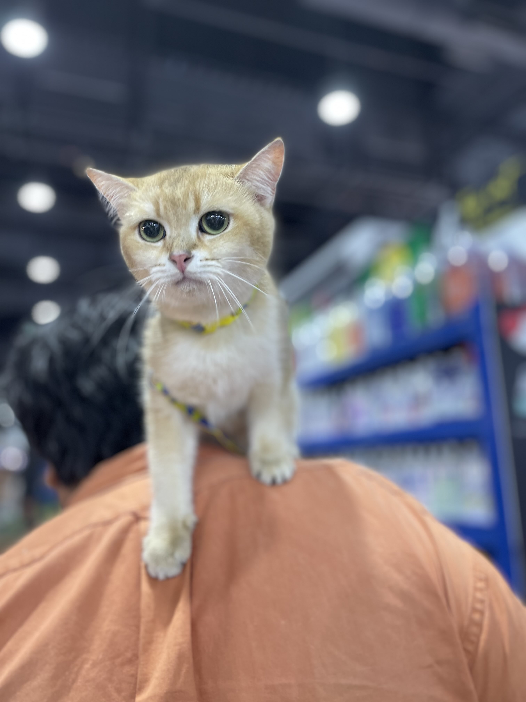

Phakapol Jantararuangtong

Summary
I am a dedicated and motivated Information and Communication Engineering sophomore with an interest in software development. Seeking an internship opportunity to apply and enhance technical skills, gain hands-on experience, and contribute to innovative projects.
Education
Chulalongkorn University, Aug 2022 - May 2026
- B.Eng. in Information and Communication Engineering (International Program)
- Currently in 2nd year with GPAX: 3.21
- Relevant courses:
- Computer Programming(Python, Java)
- Data Structures & Algorithms
- Computer Architecture & Organization
- Discrete Structure
Suankularb Wittayalai School, March 2022
- High School Diploma, GPAX: 3.99
Extracurricular Activities
Baan Yim, Aug 2023
A welcoming activity for freshmen at Chulalongkorn University
- Planning Department
- Recreation Department & Drummer
21st Vishnu Camp, Jul 2023
Orientation camp for incoming freshmen at the Faculty of Engineering, Chulalongkorn University
- Supply Department
- Recreation Department & Drummer
22nd Larngear Camp, Jan 2023
An engineering-focused camp for high school student seeking insights into life in the Faculty of Engineering, Chulalongkorn University
CU Freshy Game, Nov 2022
A sport competition between faculties for freshmen at Chulalongkorn University
- Table tennis: Silver medal (Team)
- E-sport: Silver medal (Team)
- Golf: Bronze medal (Single)
Skills
- Programming Languages:
- (proficient): Python
- (familiar): Java, HTML/CSS, Javascript
- Languages: Thai (Native), English (IELTS: 7, CU-TEP: 99/120)
- Soft Skills:
- Good Communication
- Time Management
- Problem Solving
Other